Chapter 2 Python
2.1 Data Types
Integers are whole numbers. For example:
2-30
Floats are numbers with a decimal point. For example:
1.2-3.026/3(evaluates to8.666)
Strings are characters enclosed by single ' or double " quotation marks. Any text enclosed by quotes will be treated as a string.
"My Grandpa's deck has no pathetic cards"'85.3'
Note the second example – 85.3 is a float; '85.3' is a string.
Booleans have two possible values: True and False. These can also be expressed as 1 (true) or 0 (false).
We can use the type() function to figure out the data type of an object.
2.2 Variables
Variables are assigned using the = sign:
variable_name = valueFor example:
composer = "buxtehude"year = 1637
The variable name can be almost anything. Here are some general rules to consider when naming a variable:
- The name must start with a letter or underscore
- The name can only consist of letters, numbers, or underscores
- Variables are case sensitive (i.e. Python interprets
my_number,MY_NUMBER, andMy_Numberas different variables) - Python has a set of “reserved words” that cannot be used as variable names. These are words that already have a set meaning in Python, such as
True,False,for, andif. A full list can be found here.
2.3 Math
2.3.1 Mathematical operations
A lot of mathematical operations in Python are straightforward. Here are some of the basic operations we can perform:
+and-: addition and subtraction*and/: multiplication and division**: exponentials
We can perform mathematical operations on values directly:
print(2 + 3)## 5Or we can operate on variables:
myValue = 4
print(myValue**2)## 16Python will automatically convert integers to floats when appropriate:
print(3 + 2.2)## 5.2We can save the output of an expression as a variable:
my_product = 2 * 10
print(my_product)## 20And likewise we can perform mathematical operations on variables, if these variables store numeric data:
number1 = 7
print(number1 / 2)## 3.52.3.2 Order of operations
Python follows the usual mathematical order of operations. And like in math, we can use parentheses () to enforce a specific order.
print(2 * (2 + 2))## 82.4 Comparisons
In Python, comparisons will always return a Boolean, i.e. either True or False. We can use the following syntax to compare values:
<and>: greater than, less than<=and>=: greater than or equal to, less than or equal to
For example:
print(5.3 < 17)## Trueprint(4. >= (8/2))## True==checks if two values are equal.!=checks if two values are different.
print(2 == (10 - 8))## TrueNote that a single equals sign = is used to assign values. However, a double equals sign == is used to compare values.
var1 = 3sets the variablevar1to3var1 == 3checks whether the value ofvar1is3
2.5 Built-In Functions and Methods
2.5.1 Functions
A function is a block of code that performs a task. Python comes with a substantial set of pre-written functions.
To use a function, type the function’s name, followed by parentheses. Usually, a function will operate on some data. Specify the data that you want to input to your function within the parentheses. Each item within the parentheses is called an argument.
For example, the print() function prints its argument to screen:
print('howdy')## howdyNote that we can also pass in a variable name as an argument:
myString = "yeehaw"
print(myString)## yeehawThroughout the course, we will learn about many of the functions that are a part of the Python language. For now, also note the type() function. This function takes any object as an argument and returns the data type of your object.
myObject = 5**3/7
print(type(myObject))## <class 'float'>2.5.2 Methods
Every data type that we use in Python (strings, integers, etc.) is associated with a set of functions unique to the data type. These functions are called methods.
The syntax for using a method is:
<objectName>.<methodName>()2.5.2.1 Example
The string method .upper() is used to convert a string into uppercase letters. We can use it either directly on the string itself:
"peppa".upper()## 'PEPPA'or by operating on a variable:
pig = "peppa"
pig.upper()## 'PEPPA'2.5.2.2 Modifying objects
Using a method may or not modify the object you run it on. For example, the .upper() method shows you the uppercase version of a string but does not modify the actual object that you are operating on. Observe the following code block:
pig = "peppa"
pig.upper()
print(pig)## peppapig has not been updated. To actually save the result of .upper(), we have to assign it to a variable:
pig_caps = pig.upper()
print(pig_caps)## PEPPASome methods do modify underlying variables. For example, the list .append() method (which we will learn about later) does change the list if operates on:
myList = []
print(myList)## []myList.append('apple')
print(myList)## ['apple']myList is altered by myList.append('apple'). There’s no need to type something like myList = myList.append('apple') - this would in fact be an error. Whether methods modify the objects they operate on is something you’ll have to keep track of on a case-by-case basis as you learn new methods.
2.6 Type Conversion
Sometimes, data can be converted from one type to another.
float()- converts integers and strings (when appropriate) to floats
print(float(3))
print(float("2.57"))3.0
2.57int()converts floats and strings into integers. Note that this function always rounds down if necessary. An exception here:int()does not allow you to convert a string with a decimal point into an integer -int("3.62")will throw an error.
print(int('3'))
print(int(2.57))3
2Note that for the above functions, it is not always possible to do convert data into a different type. In particular, strings with non-numeric characters cause problems - int("Dachshund") will not work.
str()converts all other data types into strings.
print(str(3))
print(str(2.57))
print(str(True))'3'
'2.57'
'True'A special case of type conversions comes with booleans. Numeric values are automatically converted into booleans. 0 is equivalent to False. All non-zero numeric values are equivalent to True. Likewise, empty strings ('') convert to False. All non-empty strings (inlcuding the string 'False') convert to True.
2.7 String Methods
2.7.1 .upper() and .lower()
The .upper() and .lower() methods take a string and convert it to uppercase and lowercase, respectively.
print("out on the wily, windy moors".upper())## OUT ON THE WILY, WINDY MOORSaria = "Piangerò La Sorte Mia"
print(aria.lower())## piangerò la sorte mia2.7.2 .split()
The .split() method takes a string and splits it into a list, dividing the list on a delimiter (i.e., separator). The delimiter is provided as an argument:
print("Newt eye, frog toe".split(','))## ['Newt eye', ' frog toe']If no argument is provided, then the string is split on whitespace (that is, it is split whenever a space or tab is encountered).
print("Eye of newt and toe of frog".split())## ['Eye', 'of', 'newt', 'and', 'toe', 'of', 'frog']2.7.3 .join()
The .join() method is the inverse of .split(): converts a list into a string, with list elements separated by a delimiter. The general syntax is:
"<delimiter>".join(<list>)For example:
" ".join(["I", "found", "a", "fox", "caught", "by", "dogs"])## 'I found a fox caught by dogs'If we do not provide a delimiter, then the strings are directly concatenated:
"".join(["I", "found", "a", "fox", "caught", "by", "dogs"])## 'Ifoundafoxcaughtbydogs'2.7.4 .rstrip(), .lstrip(), .strip()
These three methods remove unwanted characters on the right, left, or both sides of a string. You can provide the characters you want to remove as an argument:
"ricercar........,,,,,,".rstrip(",.")## 'ricercar'Without an argument, the methods remove spaces:
" ricercar ".lstrip()## 'ricercar 'Note that in the above example we strip the spaces to the left of the main text, but we do not remove the spaces from the middle or right end of the text.
2.8 Lists
Lists allow us to store multiple objects together.
A list is a sequential group of variables, denoted in Python by square brackets [], with individual entries separated by commas. A few of the neat properties of lists are:
- Ordered: The list
[1, 5, 3, 7]will always store those numbers in the same order. - Mixed data types:
["mercury", 13, 5.3, False]is a valid list which contains every data type we’ve seen so far. - Can contain other lists:
[[2, 3], "sulfur", 12, 18] - Can contain repeat values:
["tomato", "tomato", "tomato", "sulfur"]
2.8.1 Indexing
What if we want to extract a specific value from a list? We can use indexing. To index in Python, we use the following syntax:
variable_name[index]where index is the number of the item we wish to extract.
alchemists = ["Zosimos", "Oresme", "Flamel", "pseudo-Aristotle"]
print(alchemists[1])## OresmeNotice that when we printed the item at position 1, we printed out the second entry in alchemists. This is because in Python, indexing begins at 0. To print out the first entry, we would use alchemists[0].
A couple interesting things we can do with indexing:
- To print multiple consecutive items, we can provide two numbers separated by a colon
:.
print(alchemists[0:2])## ['Zosimos', 'Oresme']Note that the first number is inclusive and the second number is exclusive: we include the item at position 0 ('Zosimos'), but not the item at position 2 ('Flamel').
- We can index in reverse. To index from the end of a list, we use negative numbers.
print(alchemists[-1])## pseudo-AristotleNested lists
How would we extract the number 3 from the list below?
my_list = [1, 2, [3, 4], 5]First, we extract the [3, 4] list. This is the third item of the outer list, so it is at position 2 (remember, indexing in Python starts at 0). So we can access the interior list with my_list[2]:
print(my_list[2])## [3, 4]Within the interior list, 3 is the first item, so it is at position 0. It can be accessed with the syntax my_list[2][0]:
print(my_list[2][0])## 32.8.1.1 Indexing Strings
We can also apply indexing to extract substrings from within a string. This is done identically to how we index a list:
creature = 'stingray'
print(creature[0:5])## sting2.8.2 Adding to lists
Finally, we can add entries to the end of a list. We do this with the append() method, which is used with the following syntax:
list_name.append(item)For example:
florilegium = ['marigold', 'thistle', 'wormwood']
florilegium.append('tansy')
print(florilegium)## ['marigold', 'thistle', 'wormwood', 'tansy']2.9 For Loops
In Python, we will often want to perform an action more than once. For example, if we have a list, we might want to do the same operatation on every item within the list.
One way to do this is to use a for loop, which is structured like this:
for <temporary_variable> in <thing to loop through>:
{do something}For example:
stations = ["Oddity", "Londres", "Cherry", "Swedish"]
for i in stations:
print(i)## Oddity
## Londres
## Cherry
## Swedish2.9.1 For loop walkthrough
Here is how the loop works:
for i in stations:In this line, we:
- Define the temporary variable
i. The name of this variable is arbitrary. - We say that we are looping through
stations.
In the first iteration of the for loop, i takes on the value of the first item in stations ("Oddity"). Now we perform all of the indented code, which here is just a print() statement.
In the second iteration of the for loop, we set the value of i to the second entry in stations ("Londres"). We execute all of the indented code, printing out "Londres".
We continue on doing this until there is nothing left in stations.
In this example, there was a single line in the body of the loop, but a for loop can be arbitrarily long. Here is a longer example:
my_list = [1, 4, 6, 9, 10, 2]
for i in my_list:
i = i + 3
i = i ** 2
print(i)## 16
## 49
## 81
## 144
## 169
## 252.9.2 Repeating an action n times
We can also use a for loop to perform an action a set number of times, even when we don’t have a list to loop through. To do so, we can use the range() function. We’ll use this function a ton throughout the course.
range(<n>), where n is a single integer, generates a sequence of numbers from 0 to n (not including n itself). So to run a function 3 times, we would provide the for loop with range(3) (which generates the list [0, 1, 2]).
for i in range(3):
print(i)## 0
## 1
## 2So far, the body of our for loop has always referenced the temporary variable i. We can also use a for loop to run a block of code repeatedly without actually manipulating i:
for i in range(3):
print("All work and no play")## All work and no play
## All work and no play
## All work and no play2.10 Modifying Lists Through Loops
Consider the following code block:
years = [1346, 1665, 1855]
for i in years:
i = i - 5
print(years)## [1346, 1665, 1855]Notice that running this code block does not change the underlying list. When you run this for loop, the following happens:
iis set equal to the value of the corresponding value fromyears- We subtract 5 from
iand update the value ofi - We do not do anything with this updated
i- the original list,years, is not modified
What if we want to loop through years and update each vallue in the process. There are two ways of doing this:
2.10.1 Appending to an empty list
One way is to loop through your list, update each value, and then add it to the end of a new list. Look at the code below.
years = [1346, 1665, 1855]
updatedYears = [] # Initialize a new list to store updated values
for i in years:
i = i - 5
updatedYears.append(i) # Add updated value to the end of your new list
print(updatedYears)## [1341, 1660, 1850]Here is how the for loop works:
iis set equal to the value of the corresponding value fromyears- We subtract 5 from
iand update the value ofi - We save this new value of
iby adding it in to a new list
At the end of this loop, we have two lists:
years, which contains original valuesupdatedYears, which contains updated values (original values - 5)
2.10.2 Looping through indices
Another way to update these values is to assign them back into the original list using the following syntax:
years[<index>] = <new value>For this, we need to iterate through the indices of years.
years = [1346, 1665, 1855]
for i in range(len(years)): # Loop through the positions of years
newValue = years[i] - 5 # Extract the appropriate value from years and subtract 5 from it, storing it as a new variable
years[i] = newValue # Add updated value back into years
print(years)## [1341, 1660, 1850]Breaking this down:
- We loop through a range from 0 to the length of
years. I.e. here, we would loop through the values0,1,2 - We extract the value from years at our current position using
years[i] - We update this value by subtracting 5 from it. Updated value is saved as
newValue - We add this new value back into
yearsat the original position
At the end of this loop, we have one list, years, which no longer contains its initial values. years now contains our updated values.
2.11 While Loops
Like a for loop, a while loop is a way of repeatedly performing an action. However, whereas a for loop runs a code block a set number of times, a while loop runs the block until a specific condition is met.
A while loop is structured like this:
while <condition>:
{do something}The condition can be any expression that can be evaluated as a Boolean (True or False) - in particular the comparison operators (==, <, >, etc.) are often used here. For example:
myString = "A"
while len(myString) <= 10:
myString = myString + "AAAA"
print(myString)2.11.1 Infinite Loops
Because a while loop runs an undetermined number times, a common error is an infinite loop, or a while loop that never stops running because the condition for termination is never met. Consider the following block of code:
myNumber = 1
while myNumber > 0:
myNumber = myNumber + 1
print(myNumber)Here, the number starts at 1 (which is greater than 0) and only ever grows larger. The statement myNumber > 0 will remain true with every iteration of the loop, and the loop will never terminate, preventing your code from fully executing.
2.12 If Statements
Sometimes, we only want to perform an operation if a condition is met. To do this, we can use the if statement, which is structured as such:
if <condition>:
{do something}The <condition> above is a statement that evaluates to a Boolean (i.e. True or False). As such, the comparison expressions we have seen previously (>, ==, !=, <=, etc.) are common components of an if statement. For example:
my_number = 3
if my_number < 4:
print("Less than 4")## Less than 4if my_number > 5:
print("Greater than 5")The first statement is true: 3 is less than 4. As a result, the first print statement is executed. The second statement is false. It is therefore not executed.
Another use of conditions is checking whether a list contains a value of interest. For this, we can use in:
first_number = 3
second_number = 5
list_1 = [2,3,4]
if first_number in list_1:
print("first number is in the list")## first number is in the listif second_number in list_1:
print("second number is in the list") 2.12.1 Else
What if we want to perform an action if a condition is met, and a different action if the condition is not met?
We can do this using the else statement:
if <condition>:
{do something}
else:
{do something different} For example, we can imagine a scenario in which the birth rate in a population depends on the current population size, where we can set the birth rate to one of two values whether the current population is above or below a threshold:
current_pop_size = 450
if current_pop_size >= 500:
birth_rate = 0.6
else:
birth_rate = 0.2
print(birth_rate) 2.12.2 Else If
What if we want to check more than one condition? For this, we have the else if statement, which is structured as such:
if <condition>:
{do something}
elif <second condition>:
{do something different}We can string together any number of else if statments. Going back to our birth rate example, what if instead of just two possible birth rates, we wanted a gradient of options? We could write something like this:
current_pop_size = 450
if current_pop_size >= 500:
birth_rate = 0.6
elif current_pop_size >= 400:
birth_rate = 0.5
elif current_pop_size >= 300:
birth_rate = 0.3
else:
birth_rate = 0.2Here, the first statement is false (population size is less than 500), so we move on. The second statement is true (the population size is greater than 400). We set the birth rate to 0.5, and all subsequent elif and else statements are ignored.
Notice that the second elif statement (elif current_pop_size >= 300) is true. But we never actually evaluate this – once we hit a single true statement, the following elif statements are not evaluated.
2.13 Reading in Data
When working in Python, we often want to import data from an external file or, conversely, write our data to a file. To interact with external data objects, we use the open() function. This function takes two arguments: the name of the file we want to work with, and the mode that we want to interact with this file.
The common modes we use are:
r- Read. This allows us to import data from an external file into python.w- Write. This allows us to write our data to a file. If a file with this name already exists, operating inwmode will overwrite existing file contents.a- Append. This allows us to write our data to a file. If a file with this name already exists, operating inamode will add to existing file contents.
To open a file with the name insects.txt, for reading in file contents, we would therefore use the syntax:
f = open('insects.txt', 'r')2.13.1 Parsing a file
If we try to print() f, we get the following output: <_io.TextIOWrapper name='insects.txt' mode='r' encoding='UTF-8'>
This is because we have opened the file and saved it as a variable, but we haven’t actually read through and manipulated the data which it contains. We have two main ways of doing this in base Python:
2.13.1.1 1. Parsing with a for loop
One way to look through a file’s contents line by line is to use a for loop. We can loop through a file with the syntax:
for line in f:
print(line)## Hercules beetle
##
## Swallowtail
##
## Ornate mantis
##
## Weevil
##
## Pine chafferAs it turns out, at the end of each line, there is a special end of line character, \n. To just read in the data without the return character, we can use .strip():
for line in f:
print(line.strip('\n'))2.13.1.2 2. Parsing with readlines()
readlines() is a method that allows us to read through the entire file all at once, returning file contents as a list:
## ['Hercules beetle\n', 'Swallowtail\n', 'Ornate mantis\n', 'Weevil\n', 'Pine chaffer\n']This is more concise than a for loop, but all lines are read in without the manipulations that we can perform line-by-line in our loop.
2.13.1.3 Data Types
When we read in data, each line is stored as a string. If we want the interpreter to known that our data is numeric, we need to convert in manually. For example, consider a file with the following contents:
4
12.2
-9.854Let’s read in this data and examine its type:
f = open('numbers.txt')
fileContents = []
for l in f:
fileContents.append(l.strip())
print(fileContents)## ['4', '12.2', '-9.854']print(type(fileContents[1]))## <class 'str'>If we want, to do mathematics using these values, we will get an error. We need to convert to an integer or float to operate on them mathematically:
f = open('numbers.txt')
fileContents = []
for l in f:
fileContents.append(float(l.strip()))
print(fileContents)## [4.0, 12.2, -9.854]print(type(fileContents[1]))## <class 'float'>2.13.1.4 Closing files
We can close a file with the .close() method. To close insects.txt (previously saved as the variable f), we would run:
Once the file is closed, we cannot read it or write to it without opening it again.
2.14 Modules
Often, we need to make use of functions beyond the basic ones in Python. To do this, we can import a module, or a collection of pre-written functions. A module is imported with the following syntax:
import <module name>For example, to import the popular plotting module Matplotlib, we write:
import matplotlib.pyplot2.14.1 Module functions
To use a function from Matplotlib, we need to reference both the package name and the function name, with the general syntax:
moduleName.functionName()To use Matplotlib’s show() function, we would write:
matplotlib.pyplot.show()2.14.2 Abbreviating module names
What if you don’t want to write out matplotlib.pyplot every time you run a Matplotlib function? To simplify this, we can give our modules a shorthand name. For example:
import matplotlib.pyplot as pltNow, instead of writing out matplotlib.pyplot, we can just write plt. The previous matplotlib.pyplot.show() command is shortened to:
plt.show()2.15 Numpy
Numpy is a Python library used for manipulating arrays and performing mathematical operations on matrices. For concision, we will import the numpy module with the name np, as such:
import numpy as np2.15.1 Reading in data
The function np.loadtxt() is used to read in text data. The most basic way to run np.loadtxt() is:
np.loadtxt(<fname>)Consider a hypothetical comma-delimited file numbers.csv. The most basic way of reading it in is to run np.loadtxt('numbers.csv'). However, when we read in data, we typically want to store it in memory for further manipulation, so we usually use np.loadtxt() in conjunction with variable assignment:
myNumbers = np.loadtxt('numbers.csv')However, with a comma-delimited file as input this is likely to cause an error - Python has no way of knowing that elements in your file are separated by a space and will throw an error because something like “1,2,3” cannot be interpreted as a single numeric value. To tell Python that our data is comma-delimited, we can use the optional argument, delimiter:
myNumbers = np.loadtxt('numbers.csv', delimiter=',')Now, each number is encoded as its own element:
array([1, 2, 3])
Notice that unlike the file name, we need to specify the name of this optional argument (delimiter=). Because the file name argument is mandatory, numpy always expects the first argument to be the filename. However, since there are many possible optional arguments that once can use, it is impossible to infer which optional argument is being referred to by position alone. For optional arguments, we always need to specify their name.
np.loadtxt() has many useful optional arguments - for example skiplines, which allows the user to skip the first n lines of a file. A full list of the optional arguments to np.loadtxt() can be found here
2.15.2 Indexing numpy arrays
Within a numpy array, we often want to look at a specific element or set of elements. To do this, we use indexing.
First, we can see the total size of an array by looking at the array’s shape attribute. An attribute is a property inherent to a specific data type; it is typically viewed with the following syntax: print(<variableName>.<attributeName>). We can therefore look at the shape of our array as such: print(myNumbers.shape). This returns the number of rows and columns, respectively: (45, 12) - 45 rows and 12 columns.
2.15.2.1 Accessing Single Values
To look within these rows and columns for specific values, we use indexing:
dataName[<rowNumber>, <columnNumber>]For example, to print the value in the fifth row and third column of myNumbers, we would write:
print(myNumbers[4, 2])Remember that in Python, we start counting at 0.
2.15.2.2 Accessing Multiple Values
To print multiple consecutive items, we can provide two numbers separated by a colon :.
print(myNumbers[2:4, 5:10])Note that the first number is inclusive and the second number is exclusive: We will print the elements in rows 3 and 4 and not row 5. We will print the the elements in columns 6 through 10, and not in column 11.
2.15.3 Math in numpy
Consider the numpy array, which is saved with the name sequence:
[[1,2,3],
[4,5,6]]2.15.4 Average, Standard Deviation, Maximum, Minimum
To take the average of this array, we use the function np.mean(). np.mean() has one required argument, which is the name of the object you want to take the mean of.
Running this function on sequence will return 3.5, which is indeed the average of all six elements:
np.mean(sequence)3.5Conveniently, we can also use this same function to calculate the averages across rows and columns, by invoking the optional axis argument. Setting axis equal to 0 will produce column means; setting axis to 1 will produce row means:
np.mean(sequence, axis=0)
array([2.5, 3.5, 4.5])
np.mean(sequence, axis=1)
array([2., 5.])To compute the standard deviation, we use the np.std(). As with np.mean(), we can provide the axis argument to calculate the standard deviation along rows or columns.
We can get the maximum and minimum values of a numpy array using the np.max() and np.min() functions, respectively. These can also take the axis argument to operate along rows and columns.
2.16 Plotting with matplotlib
In this course, we will use the library Matplotlib for plotting. For concision, we will import the matplotlib.pyplot module with the name plt, as such:
import matplotlib.pyplot as plt2.16.1 Line and Scatter Plots - Walkthrough
We can initialize a figure with the following line:
fig, ax = plt.subplots()This initializes a figure (named fig) and a plot within the figure (named ax). Having separate variables for the figure and the plot within the figure may seem strange, but it will make it considerably easier to arrange and manipulate multiple subplots within a larger figure. At present, our figure is just an empty canvas:
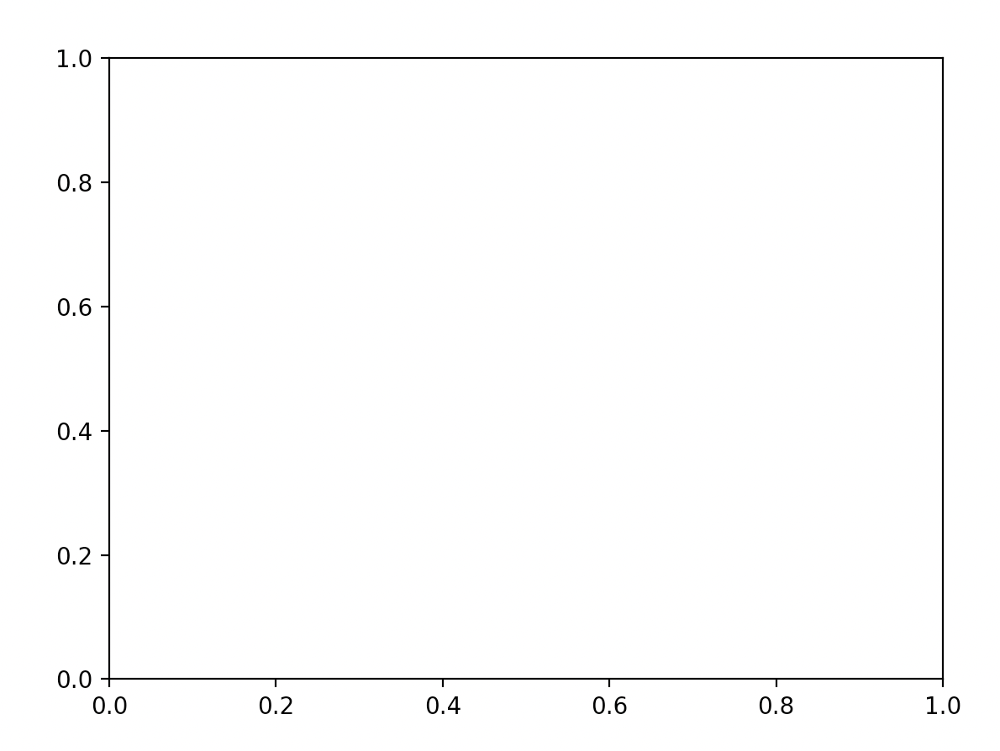
2.16.1.1 Points and Lines
Let’s add to our subplot by plotting some data. I’ve stored the temperature in Fahrenheit in Baltimore, MD and Wommels, Netherlands for the next seven hours:
hours = range(7)
tempBaltimore = [74, 73, 72, 71, 75, 79, 87]
tempWommels = [59, 60, 62, 65, 69, 72, 67]To plot a set of points, we can use the .scatter() method This function takes two mandatory arguments: a list of x coordinates and a list of y coordinates. We can plot the temperature in Baltimore as such:
ax.scatter(hours, tempBaltimore)We can display our plot by running the function plt.show(). Our plot will look like this:
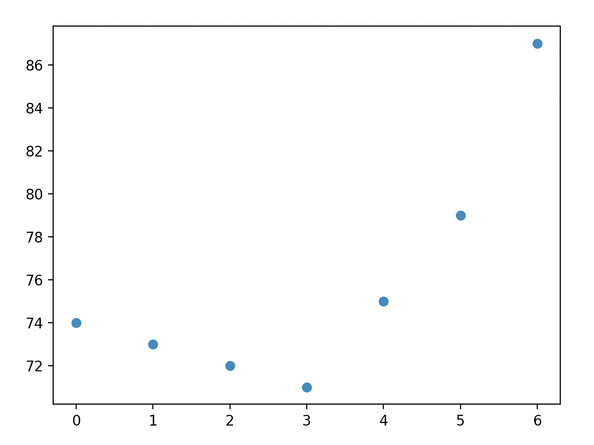
Note that the .scatter() method has a variety of optional arguments that can be used to configure the appearance of your points; we will often modify the color (c), size (s), and shape (m) of our points. A full list of options can be found here.
To add a line, we use the .plot() method. Like .scatter(), this function takes as arguments lists of x and y positions, and allows for aesthetic customization with a variety of optional parameters. For more information on these options, look here. Our plotting code now looks like this:
import matplotlib.pyplot as plt
hours = range(7)
tempBaltimore = [74, 73, 72, 71, 75, 79, 87]
tempWommels = [59, 60, 62, 65, 69, 72, 67]
fig, ax = plt.subplots()
ax.scatter(hours, tempBaltimore)
ax.plot(hours, tempBaltimore)
plt.show()and generates this image:
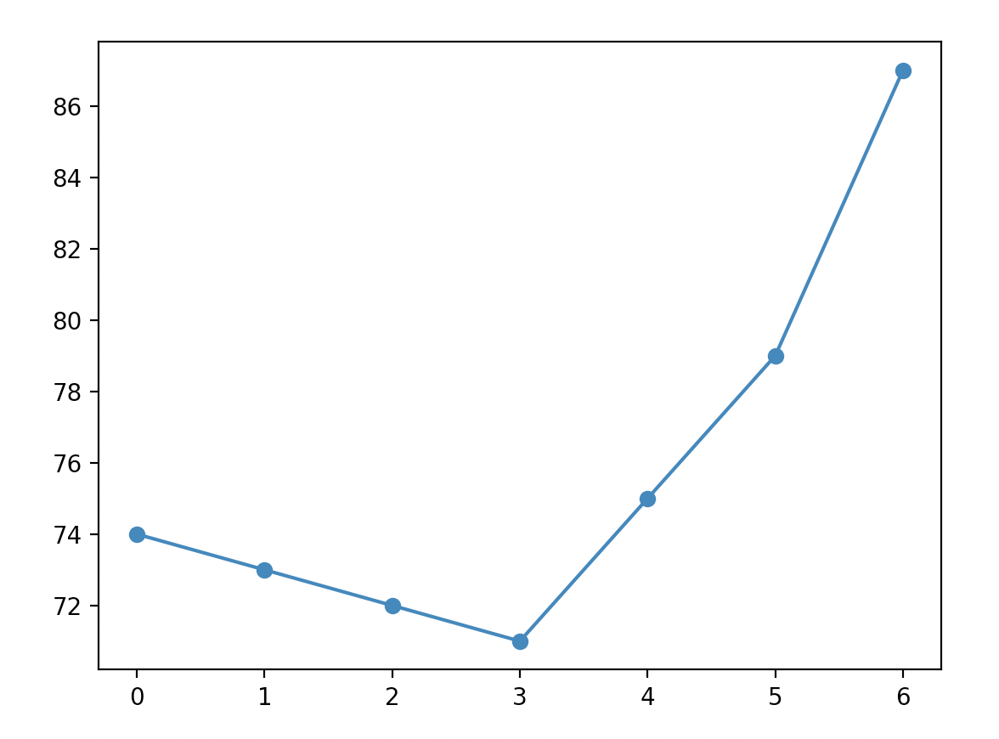
2.16.1.2 Multiple Sets of Data
To plot both Baltimore and Wommels, we simply add a second call to .scatter() and .plot():
fig, ax = plt.subplots()
ax.scatter(hours, tempBaltimore)
ax.plot(hours, tempBaltimore)
ax.scatter(hours, tempWommels)
ax.plot(hours, tempWommels)
plt.show()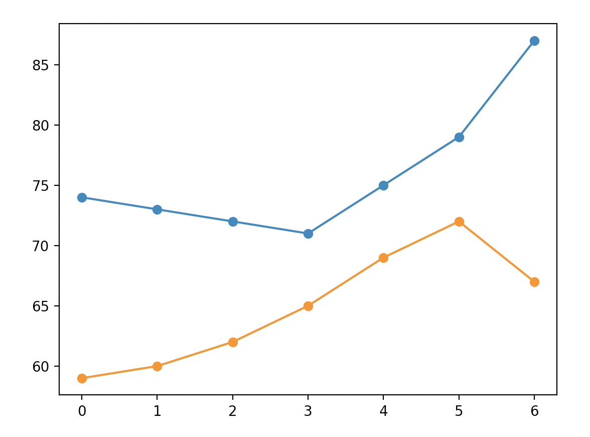
A couple things are interesting about this plot:
- The y axis scale adjust automatically to fit in Wommels.
- The second time that we call the
.scatter()and.plot()functions, they automatically plot in a new color. If we were to add a third set of points, they would again be in a new color.
2.16.1.3 Labels and Legends
To an observe, our plot is a bit confusing because it is unclear which line represents Wommels and which line represents Baltimore. We could clarify this by adding a legend. There are two steps to doing this:
- We need to use the optional
labelargument. This argument tells the interpreter how to label a line or set of points in the legend. For example, we can label a set of points as such:ax.scatter(hours, tempBaltimore, label='Baltimore'). In this example, we can label either the scatter plots or the line plots. - Create a legend using the
.legend()method.
fig, ax = plt.subplots()
ax.scatter(hours, tempBaltimore, label='Baltimore')
ax.plot(hours, tempBaltimore)
ax.scatter(hours, tempWommels, label='Wommels')
ax.plot(hours, tempWommels)
ax.legend()
plt.show()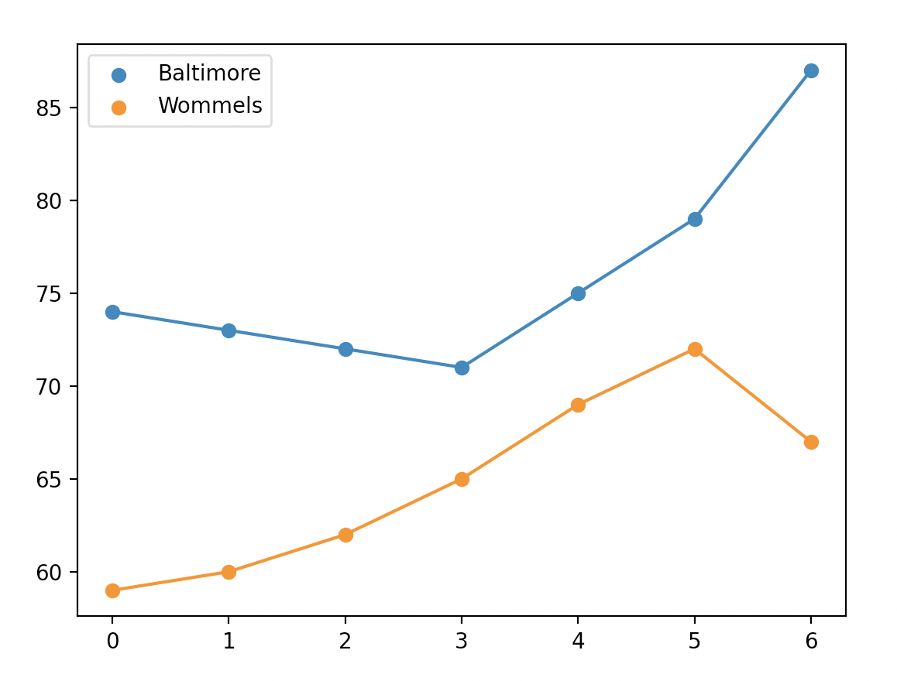
2.16.1.4 Figure Aesthetics
Now that our data is plotted, let’s add some axis labels using the .set_xlabel() and .set_ylabel() methods:
ax.set_xlabel("Time (Hours)")
ax.set_ylabel("Temperature (F)")We can set a title as such:
ax.set_title('Temperature in Baltimore and Wommels')If we wanted to set custom limits for our x and y limits, we can use the set_xlim() and set_ylim() methods:
ax.set_ylim(50, 100)Altogether, our final image looks like this:
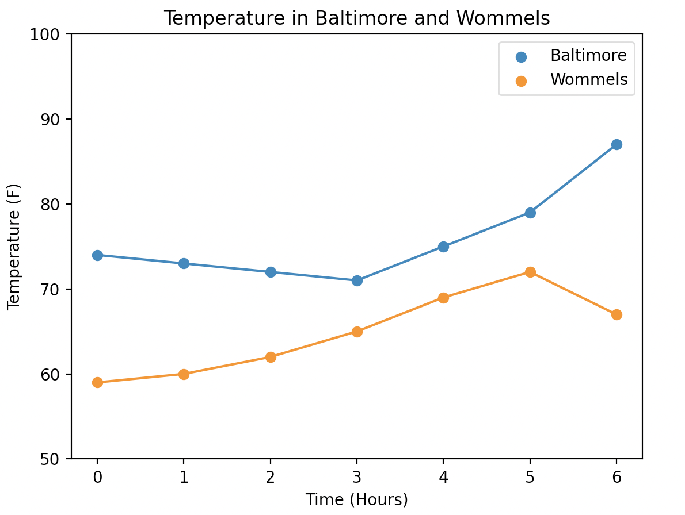
2.16.2 Histograms
Histograms are a convenient way of visually displaying the overall distribution of a one-dimensional dataset.
I’ve found 25 towns worldwide named Baltimore. Here are their current temperature in Fahrenheit saved to a list:
temperatureBaltimore = [69, 83, 82, 90, 77, 89, 82, 67, 59, 86, 74, 77, 58, 67, 62, 91, 73, 81, 67, 87, 61, 67, 61, 108, 112]To generate a histogram, we use the .hist() method. By default, this method takes just one argument: the data that you wish to plot.
fig, ax = plt.subplots()
ax.hist(temperatureBaltimore)
ax.set_xlabel('Temperature (F)')
ax.set_ylabel('Frequency')
ax.set_title('Current Temperature in Every Town Named Baltimore')
plt.show()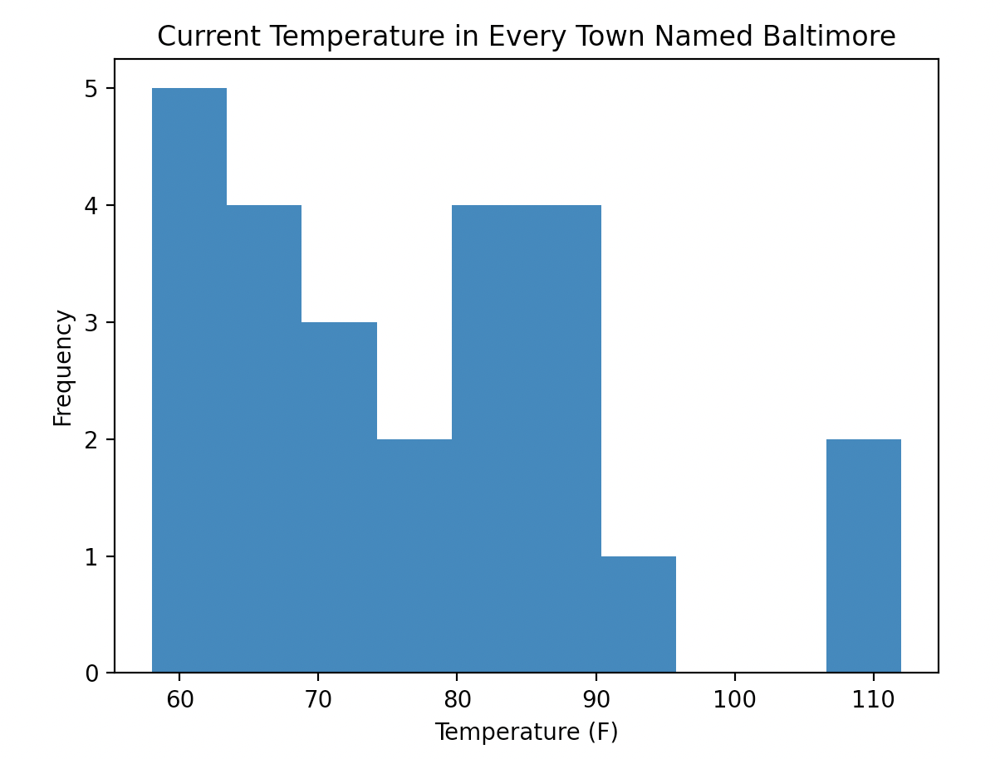
One important argument for the .hist() method is bins, which allows us to set how many groups our data is divided into. The more bins there are, the fewer x values will be contained within a single bin. For example, plotting the Baltimore data with a larger number of bins:
ax.hist(temperatureBaltimore, bins = 20)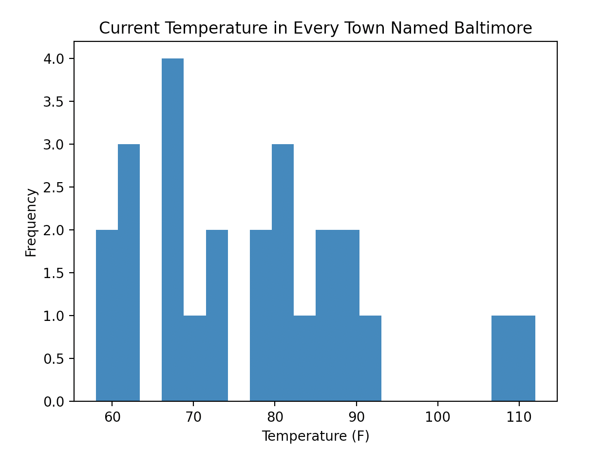
2.17 Pandas
Along with numpy, pandas is one of the most common Python libraries for working with tabular data. Where numpy is optimized for working for matrices of numerical data and rapid mathematical operations, pandas is designed for manipulating and reshaping tables that contain multiple data types. As with other packages, it is conventional to import pandas with a shortened name, as:
pd.read_csv()The most important data type that we use in pandas is the DataFrame, which is a two-dimensional data structure. A typical DataFrame looks like this:
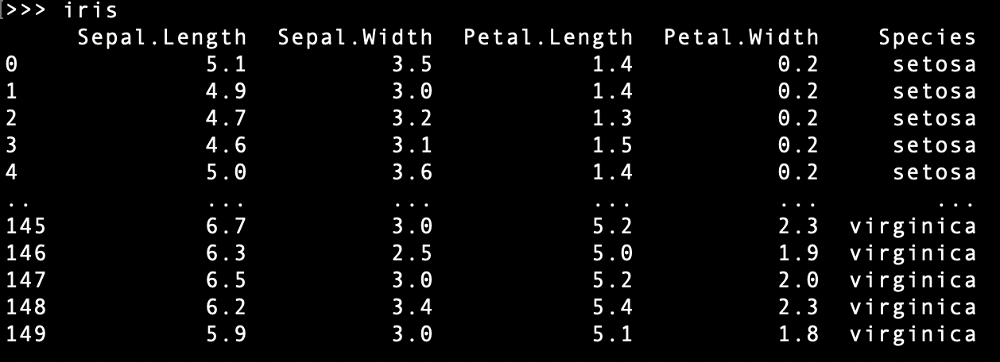
Note the overall organization of this DataFrame:
- In the leftmost column, we have the indices, which are the row names of our DataFrame. Here, the indices are the integer row numbers.
- In the top row, we have the column names of our dataframe.
Also note that the Species column consists of strings, while the other columns consist of numeric values. Datasets that mix data types like this are where pandas is best used.
2.17.1 Importing Data
The key function we will use to import data is pd.read_csv(). The only required argument to this function is the name of the file you are trying to import, and by default pandas will do a lot ot infer the appropriate settings to correctly read in your data. However, it doesn’t always get things right, especially for more complicated datasets. Some useful arguments that can control how your file is imported are:
sep- a string which separates values. By default,,.header- the row number in your data that contains the header. The header is used to infer column names.names- this argument allows you to explicitly provide the names of your columnsindex_col- the column which provides the indexusecols- if you only want to read in a subset of your data, this argument lets you specify which columns to use
The iris dataset pictured above is nicely formatted for import with pandas; it can be read in with a simple comand of:
iris = pd.read_csv('iris.csv')2.17.2 Subsetting Data
To subset pandas DataFrames, we use the syntax: <DataFrameName>.loc[<rows>, <columns>]
For example, if we want to find the petal width of the plant in the fifth row, we use the following notation:
iris.loc[4, 'Petal.Width']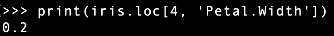
As with lists, we can use a colon to indicate a range of values that we want to subset:
iris.loc[18:22, 'Sepal.Width']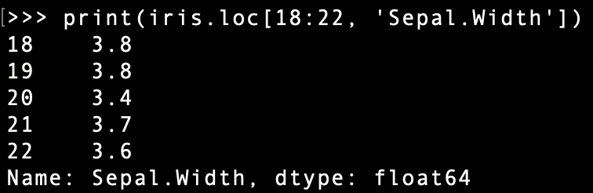
Also as with lists, leaving one side of the colon blank indicates that we want to index to the start/end of the data structure. Therefore, the following notation extracts an entire column:
iris.loc[:, 'Species']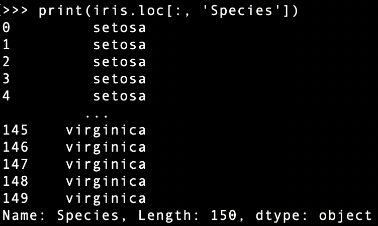
2.17.3 Boolean Indexing
pandas DataFrames present a new way of subsetting data: Boolean indexing. Boolean indexing refers to taking a vector of True or False values that is equal in size to one of the dimensions of your DataFrame and subsetting your data to only elements in True positions.
For example: let’s say that we want to subset our data just to the Virginica species.
We can first check which rows in the Species column contain the string virginica:
iris.loc[:, 'Species'] == 'virginica' 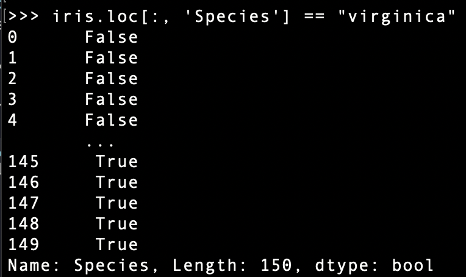
We can now subset this just rows where the above is true like so:
iris.loc[iris.loc[:, 'Species'] == 'virginica', :]or if the above looks cumbersome and hard to read (which it is), you can break it up into multiple rows for legibility:
virginicaRows = iris.loc[:, 'Species'] == 'virginica'
iris.loc[virginicaRows, :]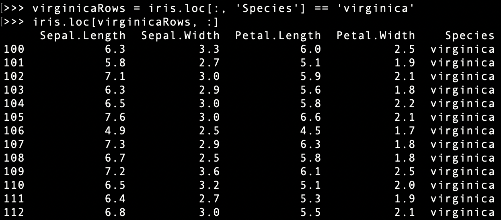
2.17.4 Adding Columns
We can add a new column to our DataFrame by using the following notation:
<dataFrame>.loc[:, <columnName>] = <data><data> can be a list of values that you provide, or it can be a modification of an existing column. For example, if we wanted to add double the petal width, we could do so as such:
iris.loc[:, 'Petal.Width.Doubled'] = 2 * iris.loc[:, 'Petal.Width']
print(iris)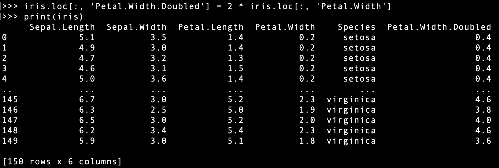
2.17.5 Adding Rows
We can use a similar notation to add a new row. Here, we instead provide pandas with a new index:
iris.loc[9876535123, :] = [5.6, 3.2, 1.1, 0.3, 'larch', 0.6]
print(iris)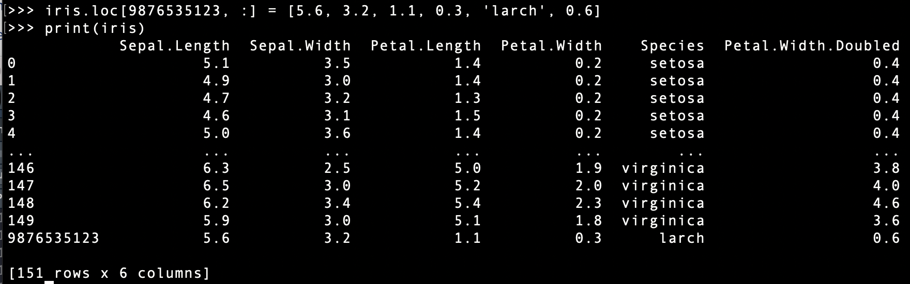
2.18 Dictionaries
A dictionary is a way of storing data, associating each item in the dictionary with a name. The common example used to conceptualize this is a phone book - each name is associated with a phone number.
We can define a dictionary using the following syntax:
dictionaryName = {<key1> : <value1>,
<key2> : <value2>}The keys in a dictionary are conventionally a string or an integer. The values can be most data types (lists, integers, floats, etc.).
A simple creation of a dictionary:
codons = {'Phe' : ['UUG'],
'Leu' : ['CUC']}
print(codons)## {'Phe': ['UUG'], 'Leu': ['CUC']}2.18.1 Looking up values
We can look up the values in a dictionary as such:
codons['Phe']## ['UUG']We can also do this by storing the key name as a variable:
myKey = 'Phe'
codons[myKey]## ['UUG']2.18.2 Adding to a dictionary
We add to a dictionary as such:
<dictionary name>[<key>] = <value> If the key already exists, then you will overwrite the existing value:
print(codons['Leu'])## ['CUC']codons['Leu'] = ['CUU']
print(codons['Leu'])## ['CUU']If the key does not already exist in your dictionary, you will add a new key-value pair:
codons['Ala'] = ['GCC']
print(codons)## {'Phe': ['UUG'], 'Leu': ['CUU'], 'Ala': ['GCC']}Likewise, we can use this syntax to modify existing values:
print(codons['Leu'])## ['CUU']codons['Leu'].append('CUG')
print(codons['Leu'])## ['CUU', 'CUG']This takes the codon value for Leu, which is the list ['CUU']. Then, we append the value 'CUG'.
2.18.3 Looping through dictionaries
We can get the keys of a dictionary using the method: .keys():
for i in codons.keys():
print(i)## Phe
## Leu
## AlaWe can do the same for value using .values():
for i in codons.values():
print(i)## ['UUG']
## ['CUU', 'CUG']
## ['GCC']We can use .items() to iterate through the keys and values together:
for key, value in codons.items():
print(key, value)## Phe ['UUG']
## Leu ['CUU', 'CUG']
## Ala ['GCC']Lastly, if we want the data returned by .keys(), .values(), and .items() stored as list, we can do:
dictionary_keys_list = list(codons.keys())
print(dictionary_keys_list)## ['Phe', 'Leu', 'Ala']